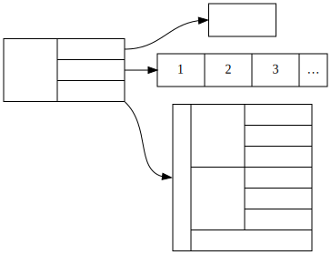

ノード
FBX データの本体は、文法レベルでは木構造で表現される。 ノードは、その木構造を構成するための主要な要素である。
ノードは以下の3種類の情報を保持する。

ノード名
ノードの名前。
観測される範囲では、 ASCII の英数字1文字以上で表現されている。
すなわち、正規表現 /[a-zA-Z0-9]+/ にマッチする名前しか利用されていないようである。
また、バイナリ形式ではノード名の長さに文法上の制限が存在する。
属性
属性はノードに紐付いた情報である。
これは XML における属性のような連想配列 (名前と値の組) ではなく、単なる値の配列として保持される。 よって、属性の出現する順番が意味を持つ。
属性として利用可能な型は以下の通りである。
- プリミティブ
booli16i32i64f32f64
- 配列
Vec<bool>Vec<i32>Vec<i64>Vec<f32>Vec<f64>
- 特殊
Vec<u8>String
FBX バイナリ形式では、配列型の値や特殊型の値の要素数やバイト長に文法上の制限が存在する。
これらの型はネイティブコード上あるいは FBX バイナリ形式上では区別・判別されるが、 FBX テキスト形式上では区別できない或いは値が変化する場合がある。
たとえば i16, i32, i64 は単なる整数の10進数表記になり、場合によっては f32 や f64 の値も整数値であれば 0 などのように記述され整数型と区別できなくなる。
また、 FBX テキスト形式では文字列のエスケープ規則が不完全であるため、文字列値も保存時と読み出し時で変化することがある。
詳細についてはテキスト文法についての『属性』節を参照。
子ノード
ノードは0個以上の子ノードを持つ。 子ノードは同じ名前を持つこともあるが、観察の限りではその出現の順番が意味を持つようなデータはなかった。 よって、表現上これらは配列であるが、実用上は順序のない集合のようなものとして扱っても問題ないだろう。